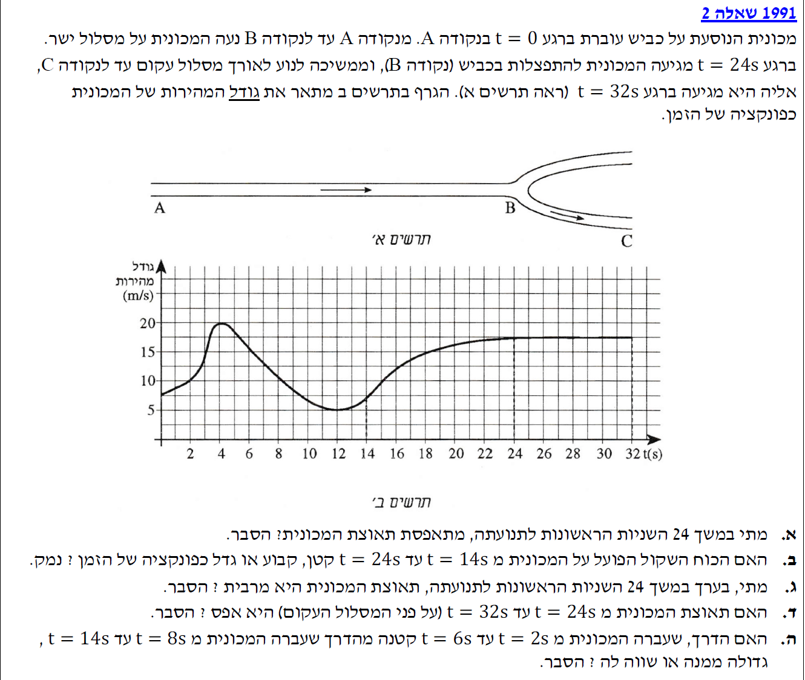
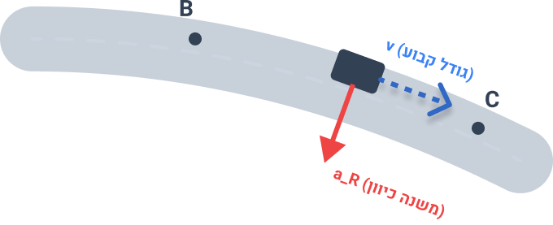
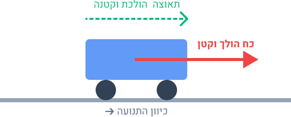
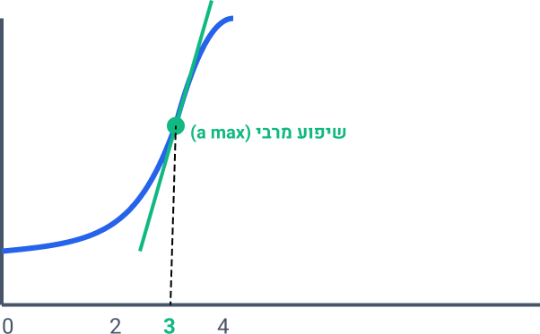
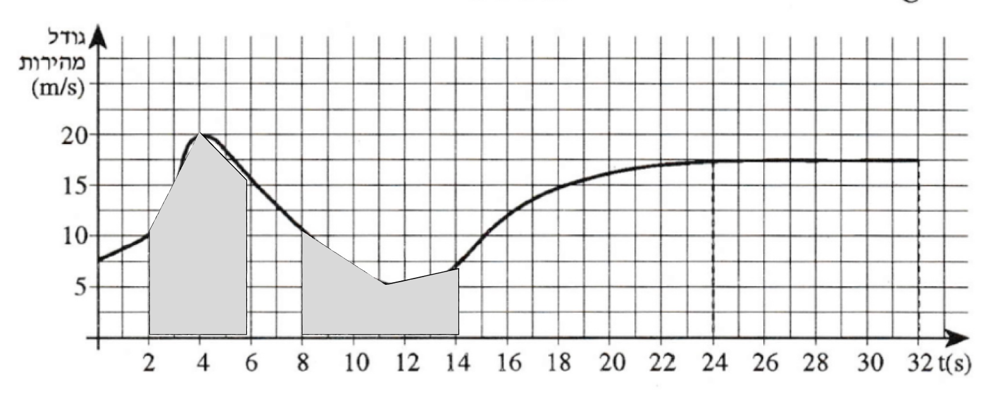

ניתוח תנועת מכונית, גרף מהירות-זמן, דינמיקה ותנועה מעגלית


תלמידים יקרים, אל תתבלבלו בין המושגים! העובדה שהמהירות גדולה (למשל ב-\(t=4\text{ s}\)) אינה אומרת שהתאוצה גדולה. התאוצה מודדת אך ורק את קצב השינוי. בדיוק ברגע המעבר בין עלייה לירידה, המהירות 'קופאת' לשבריר שנייה ולא משתנה, ולכן התאוצה שם היא אפס.
אנו ממקדים את תשומת ליבנו במרווח הזמן שבין \(t = 14\text{ s}\) לבין \(t = 24\text{ s}\). בחינה של הגרף בתחום זה מראה כי גודל המהירות עולה, אולם צורת הגרף היא של פונקציה קעורה כלפי מטה (הגרף הולך ומתמתן). יחידות המידה נשארו סטנדרטיות (MKS).
עלינו לקבוע מה קורה לכוח השקול \(\Sigma F\) הפועל על המכונית במרווח זמן זה – האם הוא הולך וקטן, נשאר קבוע, או הולך וגדל כפונקציה של הזמן, ולנמק זאת בעזרת חוקי ניוטון.
על פי החוק השני של ניוטון, \(\Sigma F = m \cdot a\), ישנו יחס ישר בין הכוח השקול לבין תאוצת המכונית, כאשר המסה \(m\) נשארת קבועה לאורך התנועה. כלומר, התנהגות הכוח השקול לאורך זמן זהה לחלוטין להתנהגות התאוצה.
נבדוק את תאוצת המכונית על פי הגרף בתחום הזמן המבוקש. התאוצה \(a\) שווה לשיפוע המשיק לגרף המהירות-זמן. בין \(t = 14\text{ s}\) ל- \(t = 24\text{ s}\), אנו רואים שהמהירות אכן גדלה (השיפוע חיובי), אך קצב הגידול הולך ופוחת משום שהגרף הופך פחות ופחות תלול ומתקרב למצב אופקי. מכיוון ששיפוע המשיק הולך וקטן, המשמעות היא שגם התאוצה \(a\) הולכת וקטנה. כתוצאה מכך, משום שהתאוצה קטנה, גם הכוח השקול \(\Sigma F\) חייב ללכת ולקטון עם הזמן.

מלכודת קלאסית! נהוג לחשוב בטעות שאם המהירות גדלה, אז מישהו דוחף את הגוף חזק יותר ויותר. זה לא נכון. כל עוד פועל על הגוף כוח בכיוון התנועה (ולו הקטן ביותר), גודל המהירות שלו ימשיך לגדול. בגרף שלנו העלייה הופכת למתונה יותר, משמע אנו עדיין דוחפים את המכונית קדימה, אבל בעוצמה חלשה יותר משהייתה שנייה קודם לכן.
אנו מתייחסים שוב לגרף המתאר את תנועת המכונית במסלול הישר לאורך כל 24 השניות הראשונות (\(t=0\) עד \(t=24\text{ s}\)).
מבקשים מאיתנו להעריך, על ידי בחינת הגרף, מתי בקירוב במהלך תנועה זו תאוצת המכונית מגיעה לערך המרבי (המקסימלי החיובי) שלה, ולספק הסבר.
כפי שציינו, תאוצת הגוף מיוצגת בגרף על ידי שיפוע המשיק. על מנת למצוא את התאוצה המרבית, עלינו למצוא את הנקודה בגרף שבה שיפוע המשיק הוא התלול ביותר כלפי מעלה. אם נסרוק את העקומה במבט משמאל לימין, נבחין שעליית המהירות התלולה ביותר מתרחשת בחלקו הראשון של הגרף, במרווח הזמן שלפני \(t=4\text{ s}\).
הגרף מתחיל בשיפוע מתון שעולה, הופך להיות תלול מאוד (נקודת פיתול), ולאחר מכן מתמתן שוב לקראת שיא המהירות. נקודת התלילות המרבית (נקודת הפיתול של הפונקציה באזור העלייה) מתרחשת בחלקו השני של קטע העלייה, שבאופן ויזואלי נמצאת בסביבות הזמן \(t = 3\text{ s}\). בנקודה זו קצב שינוי המהירות הוא הגדול ביותר ולכן התאוצה שם מקסימלית.

היזהרו ממלכודת נפוצה – גרף המהירות אינו מתאר את צורת המסלול או "גבעות" בכביש! כשאתם מסתכלים על הגרף, דמיינו את מחוג מד המהירות ברכב. הנקודה הגבוהה ביותר בגרף (הפסגה) היא הרגע שבו נוסעים הכי מהר. אבל תאוצה מרבית פירושה שהמחוג "מזנק" למעלה בקצב המהיר ביותר (כאילו לחצתם עד הסוף על דוושת הגז). זה קורה היכן שהגרף תלול ביותר, ולא היכן שהוא הגבוה ביותר.
החל מהרגע \(t = 24\text{ s}\) ועד לזמן \(t = 32\text{ s}\), המכונית עוברת מנקודה B לנקודה C. בחלק זה, כפי שמוצג בתרשים א', המסלול הופך ממסלול ישר למסלול עקום (מעגלי/קשתי). מתוך תרשים ב', הגרף מצביע על כך שבתחום זמן זה, גודל המהירות נשאר קבוע, וערכו עומד על כ- \(v = 17.5\text{ m/s}\).
השאלה היא האם תאוצת המכונית על פני המסלול העקום היא אפס. עלינו לענות ולהסביר בהסתמך על אופי התנועה.
כדי לענות על שאלה זו, עלינו להיזכר בהגדרה המלאה של וקטור המהירות. מהירות אינה רק 'גודל' אלא וקטור בעל גודל וכיוון. תאוצה נוצרת בכל פעם שיש שינוי בווקטור המהירות – בין אם הגודל משתנה, בין אם הכיוון משתנה, או שניהם יחד.
על אף שגרף המהירות (אשר מציג רק את גודל המהירות) הוא אופקי באזור זה וגודל המהירות קבוע במרווח זמן זה, המסלול הוא עקום. המשמעות היא שכיוון התנועה של המכונית, ולכן כיוון וקטור המהירות, משתנה בכל רגע ורגע. על מנת לעקם את מסלול המכונית, חייב לפעול עליה כוח שקול (כוח חיכוך מהכביש) הפונה למרכז עקמומיות המסלול. כוח זה מייצר תאוצה רדיאלית (או צנטריפטלית), אשר מוגדרת בנוסחה \(a_R = \frac{v^2}{R}\), כאשר \(R\) הוא רדיוס העקמומיות. מאחר שהמהירות אינה אפס והמסלול עקום, קיימת תאוצה רדיאלית, ולכן התאוצה הכוללת שונה מאפס.
זו אחת השאלות החשובות ביותר בפיזיקה! גרף קינמטי רגיל מציג לעיתים קרובות רק את הגודל הסקלרי (הספידמטר של הרכב). אבל תאוצה לא מתעניינת רק במחט הספידמטר, אלא גם בהגה! אם ההגה מסובב, כיוון התנועה משתנה, ולכן בהכרח קיימת תאוצה. זכרו: תנועה במעגל לעולם אינה יכולה להיות ללא תאוצה.
אנו משווים בין שני פרקי זמן במהלך התנועה הישרה: פרק זמן ראשון בין \(t_1 = 2\text{ s}\) ל- \(t_2 = 6\text{ s}\) (משך של 4 שניות), ופרק זמן שני בין \(t_3 = 8\text{ s}\) ל- \(t_4 = 14\text{ s}\) (משך של 6 שניות). נשתמש בגרף המהירות-זמן כדי להעריך את המרחקים.
האם הדרך שעברה המכונית בפרק הזמן הראשון (בין 2 ל-6 שניות) קטנה, גדולה או שווה לדרך שעברה בפרק הזמן השני (בין 8 ל-14 שניות)? יש לנמק את הקביעה.
בקינמטיקה, הדרך \(\Delta x\) שעובר גוף בתנועה חד-ממדית (כאשר כיוון המהירות אינו מתהפך) שווה לשטח הכלוא בין גרף המהירות-זמן לבין ציר הזמן. נשווה איכותית וגיאומטרית בין שני השטחים הללו המיוצגים בגרף.
שטח ראשון (\(t=2\text{ s}\) עד \(t=6\text{ s}\)): בסיס השטח הוא 4 שניות. בפרק זמן זה, הגרף כולל את פסגת המהירות. המהירות מתחילה בסביבות ה- \(10\text{ m/s}\), מזנקת עד ל- \(20\text{ m/s}\), ויורדת ל- \(15\text{ m/s}\). המהירות הממוצעת גבוהה מאוד, רובה מעל 15 מטרים לשנייה. אומדן חסר של השטח (מלבן של \(4 \times 12.5\)) נותן יותר מ- \(50\text{ m}\) דרך.
שטח שני (\(t=8\text{ s}\) עד \(t=14\text{ s}\)): בסיס השטח רחב יותר, 6 שניות. עם זאת, בפרק זמן זה המכונית נוסעת לאט מאוד (זהו אזור ה"עמק" בגרף). המהירות יורדת מ- \(10\text{ m/s}\) עד לשפל של \(5\text{ m/s}\) ועולה קלות ל- \(7.5\text{ m/s}\). המהירות הממוצעת כאן נמוכה מאוד, בסביבות ה- \(6\text{ m/s}\) עד \(7\text{ m/s}\). אומדן השטח הכולל (למשל מלבן של \(6 \times 7\)) ייתן קצת יותר מ- \(40\text{ m}\).
ניתן לראות בבירור שהפסגה הגבוהה בחלק הראשון מייצרת שטח גדול בהרבה מהעמק הממושך אך הנמוך שבחלק השני.

במקרים רבים בבחינות הבגרות אינכם נדרשים לבצע חישוב מדויק עד רמת המילימטר, אלא להראות הבנה איכותית. אם שטח אחד בבירור תופס גובה רב בהרבה (ולכן שטח גדול יותר, גם אם הבסיס קצר במעט), ניתן להסתמך על אומדן ויזואלי של ה"משבצות" בגרף כהוכחה מספקת.